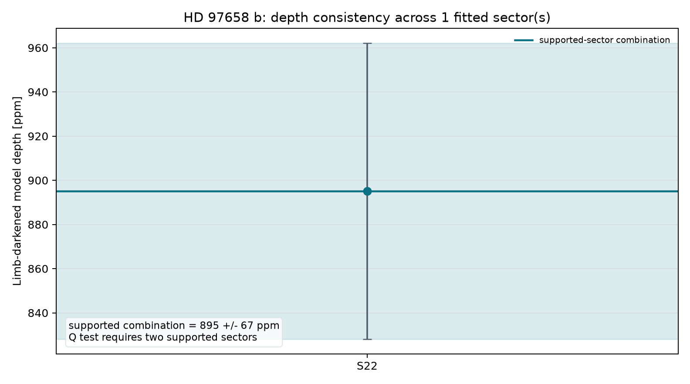
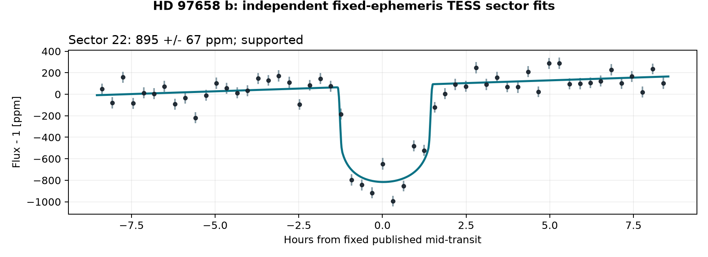

Data source notes
SHA-256, LF-normalised text
ce8f962223c8116fbcc3eb12f9542d053b8acab2e152c16480cac6c36a3a4a46Browse 9 versioned evidence files. Table previews simply display stored rows. Consult the project report for the source, processing steps, and inference assumptions.


ce8f962223c8116fbcc3eb12f9542d053b8acab2e152c16480cac6c36a3a4a46| pl_name | hostname | ra | dec | pl_orbper | pl_tranmid | pl_trandur |
|---|---|---|---|---|---|---|
| HD 97658 b | HD 97658 | 168.6376584 | 25.7105962 | 9.4897116 | 2458904.9366 | 2.8488 |
de401973e8132de0d303d2ad5c1134476afa71c800cce62c8d79e8bb3ff829fb8f937adb8cbed6323e280a0d3d7130438855c0385b376d866c517b6bca184e5e| quantity | value | unit |
|---|---|---|
| sector | 22 | TESS sector |
| period_days | 9.4897116 | days; NASA Exoplanet Archive |
| published_duration_hours | 2.8488 | hours; NASA Exoplanet Archive |
| a_over_rstar | 23.7775769231 | fixed from saved a and stellar radius |
06415d5c564bc1427c9e2d89ef1488ceb6da42495706c516358c492b98bd0439| sector | filename | transit_events | n_points | transit_supported | delta_bic | timing_shift_hours |
|---|---|---|---|---|---|---|
| 22 | tess2020049080258-s0022-0000000082308728-0174-s_lc.fits | 2 | 1011 | True | 1842.353273 | 0.08351367157 |
4e1263195d493de7afc0d18a8ee4586bc218f1cd5c4b7bc33777dc04e4e5c88757a22e9ea6472b9419baead0cacee04cd8fd794924d50f25b4b907074400fbeb2141e53562f2ca1d34fc3f4091366ffa35172c0b0f65d83840882d4ae3b947cda6395164666141c0cefef8a822dca0603fed4e3ea234a623221a912f30b47c9e6e0d5444bca2d1e53f7edce40a90ec7b949990368dd54d579ea470bcdadf13eeSHA-256 values verify the stored files. They do not independently validate the scientific analysis. Rebuild this page with python scripts/evidence_catalog.py followed by python scripts/render_evidence_page.py.